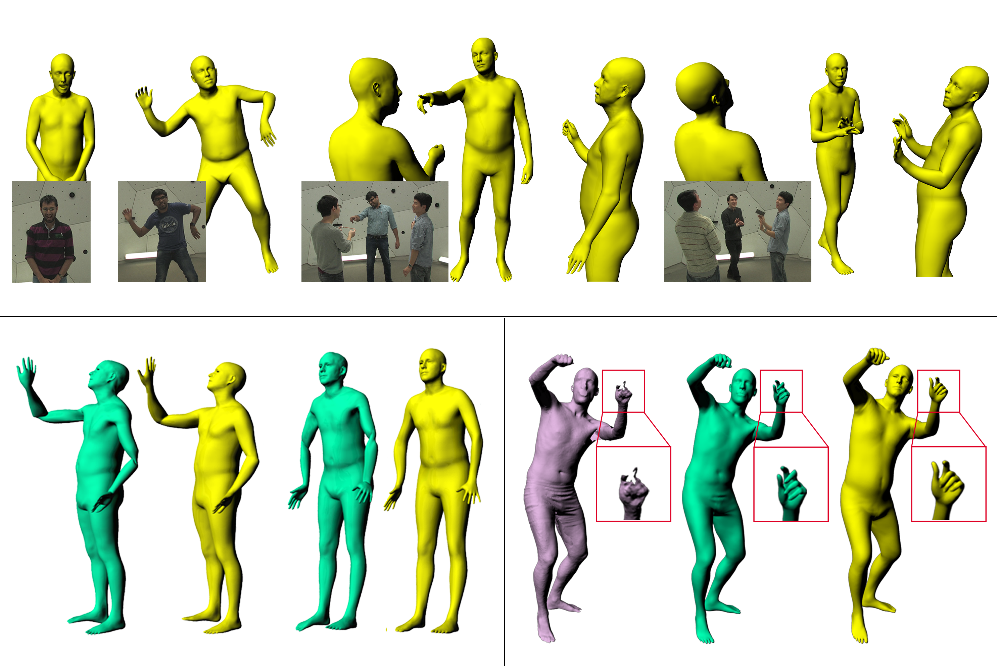

Hello Everyone
My name is Yupan Wang
You can visit my github page.
Parameterizing Variations of human shapes and motions is a long-standing problem in computer graphics and vision. Most of the existing methods only deal with a specific kind of motion, such as body poses, facial expressions, or hand gestures. We propose PanoMan (sParse locAlized compoNents based mOdel for full huMAn motioNs) to handle shape variation and full-motion across body, face, and hand in a unified framework. Like previous approaches, we factor shape variation into principal components to obtain a human shape space that approximates the shape of arbitrary identity. We then analyze sparse localized components in terms of relative edge length and dihedral angle to capture full motions of body poses, facial expressions, and hand gestures. The final piece of our model is a multilayer perceptron (MLP) that fits the residual between the ground truth and the aforementioned two-level approximation. As an application, we employ the discrete-shell deformation to drive the model to fit sparse constraints such as joint positions and surface feature points. We thoroughly evaluate PanoMan on body, face, and hand motion benchmarks as well as scanned data. The existing skinning-based techniques suffer from joint collapsing when encountering twisting motion of joints. Experiments show that PanoMan can capture all kinds of full human motions with high quality and is easier than the state-of-the-art models in recovering poses with wide joint twisting and complex hand gestures.
{kind=link}